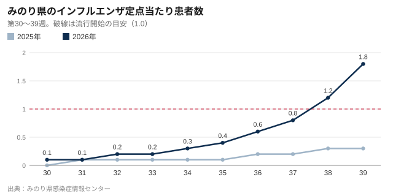

インフル流行期入り、昨季より6週早く 子どもの接種助成は倍増
みのり県は24日、インフルエンザの流行期入りを発表した。昨季より約6週間早い。春川市の公費助成による予防接種は10月1日から市内212医療機関で始まり、65歳以上の自己負担は1,500円。子どもへの助成は1回2,000円に倍増する。

みのり県は24日（木）、県内の定点医療機関からの患者報告数が流行開始の目安となる1医療機関あたり1.0人を超えたとして、インフルエンザの流行期入りを発表した。昨季より約6週間早い。
第38週（9月14〜20日）の定点当たり患者数は1.2人だった。県感染症情報センターが25日朝に公表した今週（第39週）の速報値は1.8人。昨年の同じ時期は0.3人で、流行期入りは11月上旬だった。

市教育委員会によると、今週は市内の小学校2校で、児童の感染が相次いだため学級閉鎖があった。これまでの患者の多くはA型だという。
学級閉鎖が最初に出るのは例年11月。9月に出たということは、待たずに動くべきだという合図です。対象の方は今すぐ予約を。
春川市保健所 野口明子所長
誰がいくら払うのか
市の公費助成による接種は、2026年10月1日から27年1月31日まで、市内212の医療機関で受けられる。
65歳以上の自己負担は1回1,500円。生活保護世帯と住民税非課税世帯は、市の証明書を持参すれば無料になる。心臓、腎臓、呼吸器、免疫の機能に1級相当の障害がある60〜64歳の人も、障害者手帳の持参で1,500円で受けられる。
子どもへの助成は倍増した。生後6カ月から12歳までは2〜4週間あけて2回の接種が必要で、市は1回あたりの助成額を昨季の1,000円から2,000円に引き上げる。1回接種の13〜18歳にも、今季から初めて2,000円を助成する。残りは医療機関の料金との差額で、市内では1回3,500〜4,500円程度のため、多くの家庭の負担は1回1,500〜2,500円となる。
注射の代わりに鼻に噴霧する経鼻ワクチン（2〜18歳）にも同じ助成が使える。ただし実施するのは34医療機関に限られ、数にも限りがある。
| 対象 | 回数 | 期間 | 自己負担 | 備考 |
|---|---|---|---|---|
| 65歳以上の市民 | 1回 | 2026年10月1日〜2027年1月31日 | 1,500円 | 生活保護世帯・住民税非課税世帯は無料（証明書を持参） |
| 60〜64歳で心臓・腎臓・呼吸器・免疫の機能に1級相当の障害がある方 | 1回 | 同上 | 1,500円 | 障害者手帳を持参 |
| 生後6カ月〜12歳 | 2回（2〜4週間あける） | 同上 | 医療機関の料金から1回2,000円を助成 | 助成額を1,000円から引き上げ |
| 13〜18歳 | 1回 | 同上 | 医療機関の料金から2,000円を助成 | 今季から新たに助成 |
| 経鼻ワクチン（2〜18歳） | 1回 | 同上 | 医療機関の料金から2,000円を助成 | 実施は34医療機関のみ |
| 上記以外の方 | 1回 | 随時 | 全額自己負担（目安3,500〜4,500円） | 助成なし |
市内212の医療機関で実施。多くは予約制。保険証またはマイナンバーカードを持参。出典：春川市保健所
子どもへの助成拡大にかかる費用は今季約8,600万円で、3月に成立した2026年度当初予算で手当てした。
早めの予約を
実施医療機関の多くは電話かインターネットでの予約制で、保健所は10月の最初の2週間は混み合うとみている。経鼻ワクチンの実施機関を含む一覧は、市のホームページのほか、大手町の保健所や各支所で手に入る。
ワクチンは秋にかけて順次出荷され、市によると供給量は昨季並みの見通し。接種から効果が出るまで約2週間かかるため、野口所長は「12月まで待たないで」と話す。
65歳以上の新型コロナワクチンの定期接種も10月1日から始まり、自己負担は3,000円。多くの医療機関でインフルエンザと同じ日に接種できる。
子どもがかかったら
インフルエンザと診断された子どもは、発症後5日を経過し、かつ解熱後2日（幼児は3日）を経過するまで出席停止となる。市の急患診療所は10月1日から子どもの診療時間を延ばす。詳しくは急患診療所の新しい診療時間の記事で。
手洗いと換気、熱があるときは休むこと。基本は今も変わりません。ワクチンですべての感染は防げませんが、高齢者や幼い子どもの重症化を大きく減らせます。
野口所長